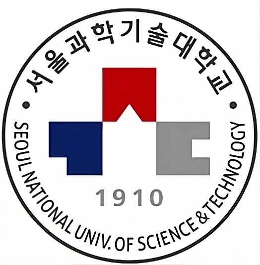
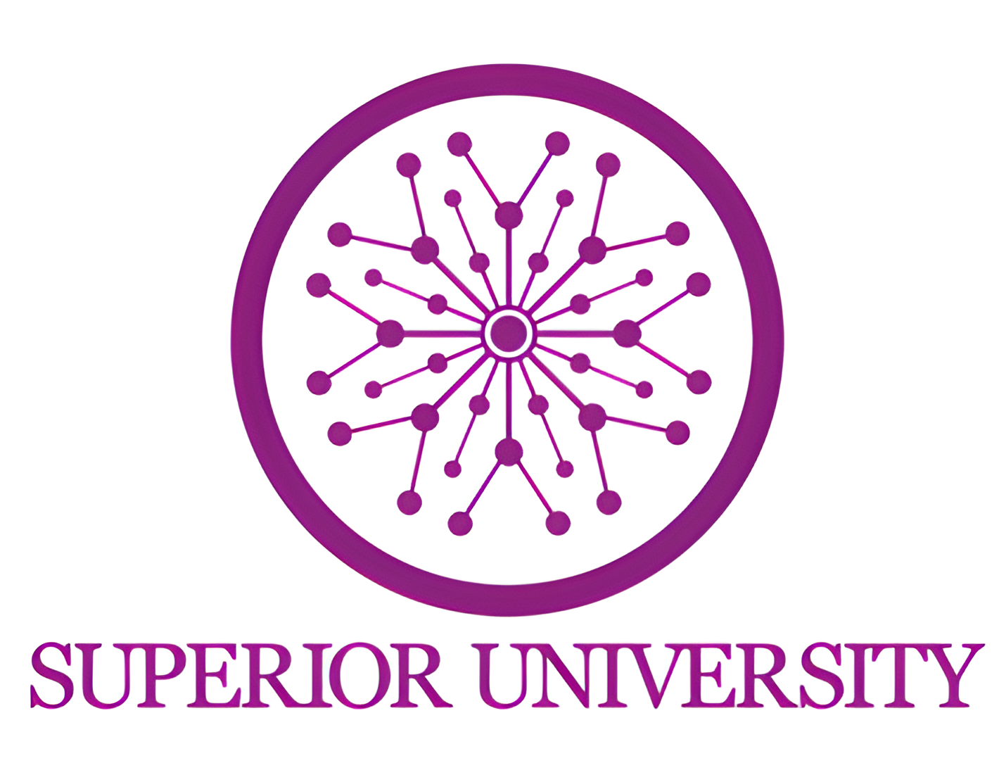

Seoul National University of Science and Technology, South Korea, (April 2024 ~ till present)
Supervisor/Teaching Duties:
- Supervise undergraduate students in research.
- Conducting weekly seminars in an engaging and effective manner.
- Providing academic counselling and mentorship to support collaborative learning environment.
- Pursuing research projects, publishing findings in Q1 rated academic journals, and contributing to the scholarly community.
- Identifying and applying for research funding and grants.
- Collaborating with colleagues within and outside the institution for research and academic projects.
Dongguk University, South Korea, (Sep 2016 ~ Feb 2024)
Teaching Duties:
- Creating course material and assessments based on academic guidelines and objectives.
- Delivering lectures, seminars, and tutorials in an engaging and effective manner.
- Conducting undergraduate labs.
- Pursuing research projects, publishing findings in academic journals, and contributing to the scholarly community.
- Collaborating with colleagues within and outside the institution for research and academic projects.

Superior University, Pakistan, Sep 2014 ~ August 2016
Teaching Duties:
- Creating syllabi, course material, and assessments based on academic guidelines and objectives.
- Delivering lectures, seminars, and tutorials in an engaging and effective manner.
- Providing academic counselling and mentorship, fostering an inclusive and collaborative learning environment.
- Pursuing research projects, publishing findings in academic journals, and contributing to the scholarly community.